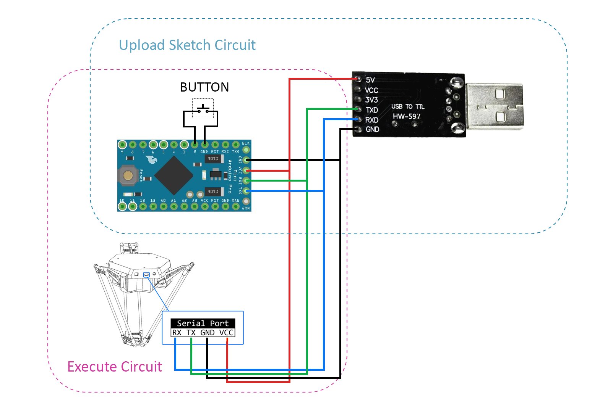

CONTROLING DELTA X 2 ROBOT WITH ARDUINO¶
This tutorial will guide you on using an Arduino board to control the Delta X 2 robot draw a spiral through the Serial Port beside the main USB port on the robot body.
Prerequisites:
- Delta X 2 Robot Kit
- Arduino Board (e.g., Arduino Pro Mini, Arduino Uno)
- USB Cable
- Any Arduino IDE installed on your computer (this tutorial use Visual Code with PlatformIO extension).
- A button and wires.
- USB to TTL module.
Step 1: Wiring Diagram¶

Step 2: Write the Sketch for Arduino¶
-
The idea is when the button pressed, the Arduino will create a G-code queue and send it via Serial Port to control the robot drawing the spiral.
-
You can visit my Github to DOWNLOAD the project.
-
To calculate the spiral dimensions, you need to consider both the working range of the robot and the specifications of your own system. Please exercise caution when identifying the z_safe value, ensuring that the end effector does not come into contact with any obstacles along its path.
Programming¶
First, we create queues to store G-codes.
#include <Arduino.h>
#include "Vector/Vector.h"
String GcodeArray[20];
String InitGcodeArray[20];
Vector<String> InitGcodeQueue;
Vector<String> GcodeQueue;
Create init G-code queue, this queue code includes initialization commands, homing, setting feedrate and acceleration, and more.
void create_init_gcode_queue()
{
InitGcodeQueue.push_back("G28");
InitGcodeQueue.push_back("M203 S" + String((int)feedrate));
InitGcodeQueue.push_back("M204 A" + String((int)accel));
InitGcodeQueue.push_back("M205 S" + String(begin_vel));
InitGcodeQueue.push_back("M360 E0");
InitGcodeQueue.push_back("G01 X0 Y0 Z" + String(z_safe));
}
Calculate and create a spiral queue:
void create_gcode_queue(int start_radius, int stop_radius, int step)
{
GcodeQueue.push_back("M03");
GcodeQueue.push_back("G01 X" + String(start_radius) + " Y0 Z" + String(z_exe));
int current_x = start_radius;
int current_i = start_radius;
String gc = "";
while (abs(current_x) <= stop_radius - step)
{
if (current_x > 0)
{
current_i = -current_x - step / 2;
current_x = -current_x - step;
}
else
{
current_i = -current_x + step / 2;
current_x = -current_x + step;
}
gc = "G02 X" + String(current_x) + " Y0 I" + String(current_i) + " J0";
GcodeQueue.push_back(gc);
}
GcodeQueue.push_back("M05");
GcodeQueue.push_back("G01 X0 Y0 Z" + String(z_safe));
}
Then check the button pressing event in loop function:
void loop()
{
if (millis() - lastMillis >= 200)
{
lastMillis = millis();
if (!digitalRead(2))
{
if (stt == FREE)
{
stt = EXECUTING;
create_gcode_queue(start_radius, stop_radius, step);
send_exe_gcodes();
}
}
}
...
}
Conclusion¶
Controlling the Delta X 2 robot using Arduino or any device that supports Serial Port communication is straightforward and versatile. This method proves to be valuable for various automation systems that involve Delta Robots, offering a flexible and accessible approach to robotic control. Whether you are working with Arduino or other compatible devices, the provided code serves as a foundation for implementing and customizing control functionalities for the Delta X 2 robot within diverse automation applications.